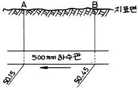
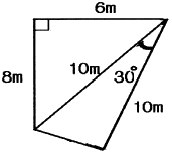
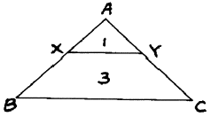
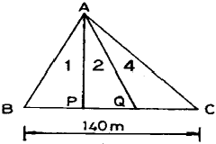
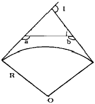
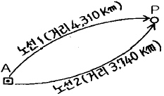
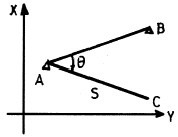

측량및지형공간정보산업기사 (2006-03-05 기출문제)
1과목: 응용측량
1. 다음 중 유량을 측정할 대 좋은 장소 선정에 대한 설명으로 옳지 않은 것은?
- 작업하기 쉽고 하저의 변화가 없는 곳
- 유선이 직선이고 균일한 단면으로 되어 있는 곳
- 잠류, 역류가 없고 유수의 상태가 균일 한 곳
- 상, 하류 횡단면의 형상이 차이가 있는 곳
(정답률: 알수없음)

2. 구적기에서 축척 1/1,000의 단위면적이 10m2일 때 축척 1100의 단위면적은 얼마인가?
- 0.1m2
- 0.01m2
- 0.001m2
- 1.0m2
(정답률: 알수없음)
3. 노선측량의 클로소이드곡선에 대한 설명으로 옳은 것은?
- 곡률이 곡선길이에 비례한다.
- 곡률이 곡선길이에 반비례한다.
- 일종의 종곡선이다.
- 곡선반경이 일정하다.
(정답률: 알수없음)
4. 다음 중 하천측량에서의 고저측량에 포함되는 내용이 아닌 것은?
- 골조측량
- 거리표 설치
- 종횡단 측량
- 심천측량
(정답률: 알수없음)
5. 터널측량에 대한 설명 중 틀린 것은?
- 갱내의 곡선설치는 일반적으로 지상에서와 같다.
- 터널의 길이방향은 삼각측량 또는 트래버스측량으로 행한다.
- 갱내의 측량에서는 조명이 필요하다.
- 터널측량은 갱외, 갱내, 갱내외 연결측량으로 나눈다.
(정답률: 알수없음)
6. 다음과 같은 500mm 하수관 공사에서 A점의 관저 계획고는 50.15m이고 B점의 관저 계획고는 50.45m, 하수관의 구배가 1/250일 때 AB간의 거리는?

- 60m
- 75m
- 120m
- 150m
(정답률: 알수없음)
7. 다음 그림과 같은 사각형의 면적은 얼마인가?

- 44m2
- 45m2
- 49m2
- 51m2
(정답률: 알수없음)
8. 그림과 같은 삼각형의 한 변 BC에 평행하게 면적을 1:3으로 분할할 경우, AB의 길이가 80m이면 AX의 길이는?

- 20m
- 40m
- 30m
- 25m
(정답률: 알수없음)
9. 터널의 중심선측량의 가장 중요한 목적은?
- 정확한 방향과 거리측정
- 갱구의 정확한 크기 설정
- 인조점의 올바른 매설
- 도벨의 정확한 위치 결정
(정답률: 알수없음)
10. 완화곡선의 성질에서 곡선반경에 관한 설명으로 옳은 것은?
- 완화곡선의 시점에서 무한대에 접근한다.
- 완화곡선의 시점에서 단곡선이 된다.
- 완화곡선의 시점과 종점에서 무한대에 접근한다.
- 완화곡선의 시점과 종점에서 단곡선에 접근한다.
(정답률: 알수없음)
11. 도로의 곡률이 0에서 어떤 값으로 급격히 변화하기 때문에 발생되는 횡 방향의 힘을 없애기 위해 곡률을 0에서 점점 증가시켜 일정한 값에 이르도록 직선부와 곡선부에 삽입하는 곡선은?
- 완화곡선
- 복심곡선
- 방향곡선
- 단곡선
(정답률: 알수없음)
12. 하천의 수심 및 유수부분의 하저 상황을 조사하고 횡단면도를 제작하기 위한 측량은?
- 육분의측량
- 심천측량
- 후반교회법
- 전방교회법
(정답률: 알수없음)
13. 경관분석을 위한 조사항목과 가장 거리가 먼 것은?
- 현황사진
- 지역 및 식생현황
- 대상지역의 역사적 배경과 문화
- 전출입 인구
(정답률: 알수없음)
14. I.P.의 위치가 공사기점으로부터 300m에 위치한, 곡선반경 R=200m, 교각 I=90° 인 원곡선을 편각법으로 측설할 때, E.C의 위치는? (단, 1 chain 간격은 20m이다.)
- No.20+14.159m
- No.21+14.159m
- No.22+14.159m
- No.23+14.159m
(정답률: 알수없음)
15. 하천측량에서 수위에 관련한 다음 용어 중 잘못된 것은?
- 최고수위(H.W.L.) : 어떤 기간에 있어서 최고의 수위
- 평균수위(M.W.L) : 어떤 기간의 관측수위를 합계하여 관측횟수로 나누어 평균값을 구한 수위
- 평수위 : 어떤 기간의 수위 중 이것보다 높은 수위와 낮은 수위의 관측횟수가 똑같은 수위
- 경계수위 : 지정된 통보를 개시하는 수위
(정답률: 알수없음)
16. 경관측량에서 고정적인 시점에서 얻을 수 있는 경관은?
- 이동경관
- 지점경관
- 장의경관
- 변천경관
(정답률: 알수없음)
17. 그림과 같이 삼각형의 정점 A에서 직선 AP, AQ를 그어 △ABC의 면적을 1:2:4로 분할하려면 BP, BQ의 길이를 각각 얼마로 하면 되는가?

- 10m, 30m
- 10m, 60m
- 20m, 40m
- 20m, 60m
(정답률: 알수없음)
18. 단곡선 설치에서 교각(I)을 측정하지 못하여 그림과 같이 a, b각을 측정하였다. 교각(I)는 얼마인가? (단, a=100°, b=130°임)

- 50°
- 100°
- 130°
- 230°
(정답률: 알수없음)
19. 깊이가 95m, 직경 4m인 수갱에서 갱내외의 연결측량을 하는데 가장 적당한 방법은?
- 트랜싯과 추선에 의한 방법
- 삼각법
- 사변형법
- 정열법
(정답률: 알수없음)
20. 편경사에 대한 설명으로 옳지 않은 것은?
- 편경사는 차량의 도로 주행시 안전을 확보하기 위해 설치한다.
- 편경사의 크기를 결정짓는 중요한 요소는 차량의 주행속도와 곡선의 곡률반경이다.
- 철도레일에 편경사를 적용한 것을 칸트라고 한다.
- 편경사란 도로 노선의 곡선부에서 안쪽을 높게 하고 바깥쪽을 낮게 하여 한쪽으로 경사지게 만든 것이다.
(정답률: 알수없음)
2과목: 사진측량 및 원격탐사
21. 카메라의 노출시간이 1/100~1/300초인 카메라로 축척 1/25,000의 항공사진을 촬영할 때 영상의 허용 흔들림량을 0.02mm로 하려면 비행기의 촬영운항 속도로 가장 알맞은 것은?
- 180km/h~540km/h
- 200km/h~600km/h
- 220km/h~660km/h
- 240km/h~680km/h
(정답률: 알수없음)
22. 원격탐측(Remote Sensing)에 대한 설명 중 옳지 않은 것은?
- 원격탐측은 회전주기가 일정하므로 원하는 지점 및 시기에 관측이 용이하다.
- 탐측된 자료가 즉시 이용될 수 있으며, 재해 및 환경 문제 해결에 편리하다.
- 관측이 좁은 시야각으로 실시되므로, 얻어진 영상은 정사투영에 가깝다.
- 짧은 시간내에 넓은 지역을 동시에 측정할 수 있으며, 반복관측이 가능하다.
(정답률: 알수없음)
23. 비행고도 2500m의 비행기 위에서 초점거리 12.5cm의 사진기로 촬영한 수직 공중사진에서 길이 30m의 건물은 얼마로 나타나겠는가?
- 1.0mm
- 1.5mm
- 2.0mm
- 2.5mm
(정답률: 알수없음)
24. GIS의 필수 구성요소가 아닌 것은?
- 지리정보 데이터베이스
- 하드웨어와 소프트웨어
- 운영 위원
- 인터넷(Internet)
(정답률: 알수없음)
25. 해석적 내부 표정에서의 주된 작업내용은?
- 관측된 상좌표로부터 사진 좌표로 변환하는 작업
- 3차원 가상 좌표를 계산하는 작업
- 1개의 통일된 블록 좌표계로 변환하는 작업
- 표고결정 및 경사를 결정하는 작업
(정답률: 알수없음)
26. 카메라의 경사에 의한 변위를 수정하고 축척도 조정된 사진지도는?
- 약집성 사진지도
- 반조정집성 사진지도
- 조정집성 사진지도
- 정사투영 사진지도
(정답률: 알수없음)
27. 사진 표정작업 중 절대표정에 해당 되지 않는 것은?
- 지구곡률 결정
- 축척 결정
- 수준면의 결정
- 위치 결정
(정답률: 알수없음)
28. 다음 중 위성에 탑제된 센서가 아닌 것은?
- HRV(High resolution visible)
- MSS(Multispectral scanner)
- TM(Thematic Mapper)
- IFOV(Instataneous Field of View)
(정답률: 알수없음)
29. 동서 10km, 남북 10km의 정사각형 구역에서 축척 1/20000읜 항공사진 한 장의 입체모델에 찍힌 유료면적이 5.92km2일 때 이 지역에 필요한 사진 매수는? (단, 안전율은 20%이다.)
- 4매
- 17매
- 21매
- 34매
(정답률: 알수없음)
30. 다음 중 과고감이 가장 크게 나타나는 사진기는?
- 광각 사진기
- 보통각 사진기
- 초광각 사진기
- 사진기의 종류와는 무관하다.
(정답률: 알수없음)
31. 3차원 공간 위에 세 점으로 정의한 삼각형의 조합에 의하여 지표면을 표한하는 방식은?
- 불규칙삼각망(TIN)방식
- 격자(Grid)방식
- 임의점 추출(Randam point)방식
- 등고선(Contour line)방식
(정답률: 알수없음)
32. 수직 항공상에 나타난 교량의 길이가 0.5mm이고 이 교량의 실제 거리는 15m이다. 이 사진은 카메라의 초점거리가 15cm이고 화면의 크기는 28cm×28cm이다. 이 사진 1장의 포괄되는 토지의 면적은?
- 70.56km2
- 67.61km2
- 65.00km2
- 62.90km2
(정답률: 알수없음)
33. 초점거리 15cm인 카메라로 고도 1800m에서 촬영한 연직사진에서 도로 교차점과 표고 300m의 산정이 찍혀 있다. 교차점은 사진 주점과 일치하고, 교차점과 산정의 거리는 밀착사진상에서 55mm였다. 이 사진으로부터 작성된 축척 1/5000 지형도 상에서 두 점의 거리는?
- 110mm
- 130mm
- 150mm
- 170mm
(정답률: 알수없음)
34. 속성정보로 데이터베이스화 되는 내용에 대한 설명으로 옳은 것은?
- 도형으로서만 기록되어야 한다.
- 숫자와 문자로서만 기록되어야 한다.
- 필요시 사진 등 화상정보로써 기록할 수 있다.
- 속성정보와 도형정보간의 연결은 사실상 불가능하다.
(정답률: 알수없음)
35. 다음 중 GIS의 정확도 향상방안과 직접 관계없는 것은?
- 자료의 검증 확대
- 신뢰도 높은 자료의 활용
- 작업단계별 정확도 검증
- 개방형 GIS의 도입
(정답률: 알수없음)
36. 래스터(또는 그리드) 저장 기법 중 셀 값을 개별적으로 저장하는 대신 각각의 변 진행에 대하여 속성값, 위치, 길이를 한 번씩만 저장하는 방법은?
- 사지수형 기법
- 블록 코드 기법
- 체인 코드 기법
- Run-length 코드 기법
(정답률: 알수없음)
37. 지상기준점의 선점 조건으로 맞지 않은 것은?
- X, Y, H가 동시에 정확하게 결정할 수 있는 점이어야 한다.
- 시간적으로 변하여도 무방하나 상공에서 보여야 한다.
- 사진상 명료한 점이어야 한다.
- 지표면에서 정확히 측정할 수 있는 점이어야 한다.
(정답률: 알수없음)
38. 우리나라 평면좌표계 원점은 서부, 중부, 동부 원점을 사용하고 있다. 하지만, 울릉도는 예외의 원점을 사용하는데 사용하는 원점은?
- 38° N 131° E
- 38° N 130° E
- 38° N 129° E
- 38° N 125° E
(정답률: 알수없음)
39. 초점거리 152mm이 연직사진에서 어느 평지에 대한 사진축척이 1/20000이다. 연직점에서의 거리가 70.4mm이고 이 평지에 대하여 표고차가 250m인 지점의 기복변위량은?
- 5.8mm
- 6.8mm
- 7.8mm
- 8.8mm
(정답률: 알수없음)
40. 다음과 같은 GIS 자료 중 도형(위치)자료로 활용할 수 있는 것은?
- 관거 매설 년도
- 관거 재질
- 관거 관리 이력
- 관거 시점 좌표
(정답률: 알수없음)
3과목: GIS 및 GPS
41. 직접 수준측량을 하여 2km를 왕복하는데 오차가 30mm였다면 이것과 같은 정밀도로 측량하여 4km를 왕복 측량하였을 때에 예상되는 오차는?
- 24mm
- 42mm
- 60mm
- 74mm
(정답률: 알수없음)
42. steel tapr를 사용하여 경사면을 따라 50m의 거리를 측정한 경우 수평거리를 구하기 위하여 실시한 보정량이 4cm일 때의 양단 고저차는?
- 1.00m
- 1.40m
- 1.73m
- 2.00m
(정답률: 알수없음)
43. P점의 표고를 구하기 위하여 수준점 A에서 2개의 노선에 대하여 수준측량한 결과가 다음과 같았다. P점의 표고는 얼마인가? (단, H1(노선 1의 수준측량으로 얻은 P의 표고)=23.744m, H2(노선 2의 수준측량으로 얻은 P의 표고)=23.720m)

- 23.726m
- 23.731m
- 23.736m
- 233741m
(정답률: 알수없음)
44. 래스터식 자료구조에 대한 설명 중 옳지 않은 것은?
- 점은 하나의 셀로 표현된다.
- 각 셀은 행과 열의 값으로 참조된다.
- 선은 한 방향으로 배열되어 인접하고 있는 셀들에 의해 표현된다.
- 셀의 크기는 길이와 면적의 계산에 영향을 미치지 않는다.
(정답률: 알수없음)
45. 방위각과 방향각에 대한 설명으로 옳은 것은?
- 방위각은 우회전 관측각이며 방향각은 좌회전 관측각이다.
- 방위각은 진북을 기준으로 한 것이며 방향각은 적도를 기준으로 한 것이다.
- 방위각은 자오선을 기준으로 하며 방향각은 임의의 기준선을 기준으로 한다.
- 방위각과 방향각은 동일한 것이다.
(정답률: 알수없음)
46. 노선 및 하천측량과 같이 폭이 좁고 거리가 먼 지역의 측량에 이용되는 삼각망은?
- 단열 삼각망
- 사변형 삼각망
- 유심삼각망
- 단 삼각망
(정답률: 알수없음)
47. 다음 중 지형측량에 대한 설명으로 옳지 않은 것은?
- 등고선 간격이 "L“이라는 말은 수직방향의 거리가 "L"이라는 것이다.
- 등고선 간격은 일반적으로 축척 분모수의 1/4000~1/4500이다.
- 축척 1/50000 지형도의 주곡선 간격은 20m이다.
- 등고선은 능선과 직각으로 만난다.
(정답률: 알수없음)
48. 다음의 지오이드(Geoid)에 관한 설명 중 틀린 것은?
- 중력장 이론에 의해 물리학적으로 정의한 것이다.
- 평균해수면을 육지까지 연장하여 지구전체를 둘러싼 곡면이다.
- 지오이드면은 등포텐셜면으로 중력방향은 이 면에 수직이다.
- 지오이드면은 대륙에서는 지구타원체보다 낮고 해양에서는 높다.
(정답률: 알수없음)
49. 지구 곡률로 인하여 발생하는 오차는?
- 구차
- 기차
- 양차
- 우차
(정답률: 알수없음)
50. 평판측량 축척 1/600의 도면을 작성할 때 도상 허용오차를 0.2mm로 하면 측점의 구심오차는 얼마까지 허용되는가?
- 5cm
- 6cm
- 7cm
- 8cm
(정답률: 알수없음)
51. 다음 중 자자기의 3요소가 옳게 짝지어진 것은?
- 편각, 수평각, 방향분력
- 편각, 수평각, 수직분력
- 편각, 복각, 수평분력
- 편각, 경사각, 연직분력
(정답률: 알수없음)
52. 삼각측량 결과의 조정에 있어서 다음의 3가지 경우, log sin α값의 1“에 대한 표차의 절대값을 순서대로 나타낸 것으로 옳은 것은? (단. d1=α가 30°인 경우의 표차의 절대값, d2=α가 90°인 경우의 표차의 절대값, d3=α가 120°인 경우의 표차의 절대값)
- b3＞b2＞d1
- d1＞d2＞d3
- d1＞d3＞d2
- d1=d3＞d2
(정답률: 알수없음)
53. 각이 A, B, C이고 대응변이 a, b, c인 삼각형에서 ∠A=22° 00‘ 56“, ∠C=80° 21' 54", b=310.95m일 때 변 a의 길이는?
- 119.34m
- 310.95m
- 313.86m
- 526.09m
(정답률: 알수없음)
54. 각과 거리를 측정하여 그 점의 위치를 결정하는 경우 거리 측량의 정밀도를 1/10,000라고 하면 각 오차는 어느 정도까지 허용되는가?
- 10“
- 20“
- 30“
- 40“
(정답률: 알수없음)
55. 축척 1/25000의 지형도상에서 A점의 표고가 22m, B점의 표고가 122m일 때 A, B간의 도상거리가 10cm이면 A, B의 경사도는 얼마인가?
- 1/25
- 1/100
- 1/144
- 1/200
(정답률: 알수없음)
56. 수치표고모형(DEM)에 대한 설명으로 가장 옳은 것은?
- 지구표면의 현상들을 표고 및 지표의 다른 속성까지 포함하여 수치적으로 모형화하는 방법
- 지형자료 중 벡터형 고도자료이며 미국 NIMA에서 제작한 자료를 말한다.
- 지형, 지물 등에 관계하는 지도적 정보와 위치, 형상을 나타낸 좌표자료 및 속성자료 등을 컴퓨터처리가 가능한 상태로 표현하는 것
- 공간상에 나타난 연속적인 기본변화를 수치적으로 표현하는 방법으로 표고에 관한 정보를 다룬다.
(정답률: 알수없음)
57. 오차의 방향과 크기를 산출하여 소거할 수 있는 오차는?
- 과오
- 정오차
- 우연오차
- 상차
(정답률: 알수없음)
58. 트랜싯을 보정할 때 고려해야 할 사항이 아닌 것은?
- 수준기축이 연직축에 수직이 되어야 한다.
- 수평축과 연직축은 평행이 되어야 한다.
- 시준선이 수평할 때 망원경 수준기의 기포가 중앙에 위치해야 한다.
- 시준선이 수평하고 망원경 수준기의 기포가 중앙에 있을 때 연직분도원의 유표가 0으로 표시되어야 한다.
(정답률: 알수없음)
59. 삼각측량을 하여 그림과 같은 결과를 얻었다. 이 때 C점의 C좌표(Cx)는? (단, A(100, 10), B(150, 200), θ=30° 11‘ 00“, AC=S=980.65m, 좌표의 단위는 m)

- 20.92
- -112.73
- -161.07
- -321.29
(정답률: 알수없음)
60. 지형공간정보를 위치정보와 특성정보로 구분할 때 위치정보와 관련 있는 것은?
- 절대위치정보
- 영상정보
- 설계도 정보
- 속성정보
(정답률: 알수없음)
4과목: 측량학
61. 기본 측량을 위하여 설치한 측량표는 누가 관리하는가?
- 건설교통부장관
- 해당토지소유자
- 과할시장 또는 군수
- 국토지리정보원장
(정답률: 알수없음)
62. 영구표지 및 일시표지에 표시할 사항ㅇ 아닌 것은?
- 측량자의 성명
- 관리자의 성명
- 기본측량 또는 공공측량의 구분
- 설치자의 성명
(정답률: 알수없음)
63. 측량의 기준 중 회전타원체면상의 값으로 표시하여야 할 것은?
- 수준원점
- 경위도의 원점
- 거리와 면적
- 지구의 형상과 크기
(정답률: 알수없음)
64. 수치 지형도의 보완은 몇 년에 1회 이상 주기적으로 하는가?
- 1년
- 2년
- 3년
- 4년
(정답률: 알수없음)
65. 측량법에서 정의한 측량업의 종류가 아닌 것은?
- 연안조사측량업
- 공간영상도화업
- 수치지도제작업
- 소규모측량업
(정답률: 알수없음)
66. 다음 중 측량업 등록을 할 수 있는 사람은?
- 금치산의 선고를 받은 자
- 파산자로서 복권되지 아니한 자
- 형의 집행 유예의 기간중에 있는자
- 측량업 등록이 취소된 후 3년이 경과된 자
(정답률: 알수없음)
67. 고의로 측량성과를 사실과 다르게 한 자에 대한 벌칙은?
- 200만원이하의 벌금에 처한다.
- 200만원이하의 과태료에 처한다.
- 1년이하의 징역 또는 1000만원 이하의 벌금에 처한다.
- 2년이하의 징역 또는 2000만원 이하의 벌금에 처한다.
(정답률: 알수없음)
68. 손실보상에 관해 관할 토지수용위원회에 재결을 신청할 경우 재결신청서에 기재할 내용 중 옳지 않은 것은?
- 재결의 신청자와 상대방의 성명 및 주소
- 손실발생지의 주소
- 측량의 종류
- 손실발생의 사실
(정답률: 알수없음)
69. 다음은 1/5,000 지형도의 등고선과 관련한 사항이다. 틀린 것은?
- 일반적인 표고기준은 인천만의 평균해수면으로 한다.
- 제주도의 표고기준은 제주만의 평균해수면으로 한다.
- 주곡선은 5m 간격으로 표시한다.
- 조곡선은 주곡선 간격의 1/2간격으로 표시한다.
(정답률: 알수없음)
70. 국토지리정보원장이 간행하는 지도의 축척이 아닌 것은?
- 1/2500
- 1/15000
- 1/25000
- 1/5000
(정답률: 알수없음)
71. 다음 설명 중 측량법의 제정 목적에 해당되지 않는 것은?
- 측량에 관한 기준을 정하는데 있다.
- 측량제도의 발전을 도모하는데 있다.
- 측량업무의 규제와 경비절감에 있다.
- 측량의 정확성을 확보함에 있다.
(정답률: 알수없음)
72. 일반측량으로서 공공측량에 준하는 측량이 아닌 것은?
- 측량노선의 길이가 5km 이상인 수준측량
- 촬영지역의 면적이 1km2이상인 측량용 사진의 촬영
- 측량실시 지역의 면적이 1km2이상인 삼각측량
- 국토지리정보원장이 발행하는 지도의 축척과 동일한 축척의 지도제작
(정답률: 알수없음)
73. 기본측량을 위하여 설치된 측량표를 이전, 손괴, 기타 효용을 해하는 행위는 한 자는?
- 1년 이하의 징역 또는 1000만원 이하의 벌금에 처한다.
- 200만원이하의 과태료를 부과한다.
- 2년 이하의 징역 또는 2000만원 이하의 벌금에 처한다.
- 200만원 이하의 벌금에 처한다.
(정답률: 알수없음)
74. 레벨 등 성능검사를 받아야 하는 측량기기는 그 성능검사를 몇 년 마다 하여야 하는가?
- 3년
- 2년
- 1년
- 수시
(정답률: 알수없음)
75. 다음은 측량업자에 관한 사항으로 잘못된 것은?
- 측량업을 영위하고자 하는 자는 해당업종별로 등록을 하여야 한다.
- 측량업자가 사망한 때, 사업을 양도, 법인합병이 있는 때에는 상속인, 양수인, 설립법인은 종전의 측량업자의 지위를 승계한다.
- 측량업자의 지위를 승계한 자는 승계사유가 발생한 날부터 60일 이내에 등록관청에 신고하여야 한다.
- 측량업자가 상호를 변경하였을 때에는 변경이 있는 날부터 30일 이내에 변경등록을 하여야 한다.
(정답률: 알수없음)
76. 다음 중 측량의 기준으로 사용되는 좌표가 아닌 것은?
- 극좌표
- 지구중심직교좌표
- 평면직교좌표
- UTN 좌표
(정답률: 알수없음)
77. 다음 측량표 중 영구표지가 아닌 것은?
- 표기
- 자기점표석
- 수준점표석
- 검조장
(정답률: 알수없음)
78. 측량법에 따른 중급기술자에 해당되지 않는 기술자는?
- 학사 학위를 가진 자로서 6년 이상 측량 업무를 수행한 학력ㆍ경력자
- 측량 및 지형공간정보기사의 자격을 가진 자로서 4년 이상 측량 업무를 수행한 기술자격자
- 석사 학위를 가진 자로서 2년 이상 측량 업무를 수행한 학력ㆍ경력자
- 측량 및 지형공간정보산업기사의 자격을 가진 자로서 7년 이상 측량 업무를 수행한 기술자격자
(정답률: 알수없음)
79. 1/5,000 지형도 도식적용규정 내용 중 지하철도 표시에 관한 사항이다. 지하철도의 표시방법으로 바르게 설명한 것은?
- 지상에 부설된 노선만 표시하고 지하의 노선은 표시를 생략한다.
- 지하노선은 파선으로 표시하여 진행방향을 알 수 있게 한다.
- 지하노선은 점선으로 표시하여 연결되는 노선을 알 수 있게 표시한다.
- 지하노선도는 지상철도와 같은 방법으로 표시한다.
(정답률: 알수없음)
80. 다음 공공측량의 작업순서로 맞는 것은?
- 작업규정작성→작업실시→작업규정승인→성과심사→성과고시
- 작업규정작성→작업규정승인→작업실시→성과심사→성과고시
- 작업실시→작업규정작성→작업규정승인→성과심사→성과고시
- 작업규정작성→작업실시→작업규정승인→성과고시→성과심사
(정답률: 알수없음)